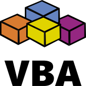

¿Sabes lo que soy? Soy un perro persiguiendo coches. ¡No sabría qué hacer con uno si lo atrapara! Yo
solo ...hago cosas.
Hola. Soy Gerardo Tordoya, de Argentina. Éste es mi portfolio que está más bien orientado a presentarme
como Desarrollador Fullstack de Aplicaciones Multiplataforma.
Todo un título... lo sé. No que lo haya alcanzado ya, pero sinceramente creo que quien haya tenido que
encarar un proyecto con una nueva tecnología (una de esas que cada par de años aparece), y sentarse a
estudiar desde cero el lenguaje o el framework o la librería o lo que sea que demanda, coincidirá
conmigo en que, en realidad, aspiramos a eso que decimos que somos. El programador clásico, se inicia
como codificador. Y al convertirse en desarrollador, se vuelve estudiante en un aprendizaje que se
renueva constantemente por el rebooteo al que le fuerza cada proyecto que se le presenta o que encara.
He tratado a través de las secciones de ser sucinto pero interesante. Como lo que conversaría a lo largo
de una entrevista. Alguien me comentó hace un tiempo que Atahualpa Yupanqui alguna vez dijo que «El
artista no debe deslumbrar sino alumbrar el camino de otros». Si tuviera que resumir, diría que pretendo
con este porfolio «alumbrar» sobre lo que soy y para nada pretendo «deslumbrar» a nadie (que sería lo
mismo que enceguecerle).
¡Ojalá que les guste mi propuesta!
Gracias por visitar mi página.
Actualizado Jun-2019
Portfolio
Sí, esto que estás viendo ahora mismo, es un proyecto también. Tal vez debería explicarme: las librerías
y los frameworks son recursos asombrosos. Nos ahorran tener que codificar sobre cosas que ya se han
hecho y probado. Hasta ahí, todo bien. Pero nos alejan del código. Yo siempre digo que codificar se
parece mucho a la práctica de un instrumento musical: si queremos progresar, no hay que abandonarla. Es
por eso que todo este portfolio está hecho "a mano", una página estática sin frameworks ni librerías ni
nada. El HTML es mío, como así también el CSS y el script. Es una muestra de código puro en el que,
obviamente, voy a seguir trabajando para mantenerlo actualizado.
Django
Todo el que ha se ha iniciado en Djanto conoce la aplicación de encuestas de la documentación oficial.
Esto es eso, nada más, nada menos, con la salvedad que yo, para comprender mejor a Django, no usé el
idioma inglés y tampoco seguí toda la receta sino que le fui haciendo pequeñas modificaciones. Y la idea
es, justamente, continuar trabajando en este proyecto a manera de banco de pruebas para seguir
aprendiendo. El proyecto está enlazado y desplegado en Heroku.
Prolog
Proyecto cerrado. Este programa fue a pedido de una institución educativa donde tomé un
curso. ¿Por qué lo rescato? En ese tiempo, yo consideraba que la codificación debía ser elegante y
abstracta. El algoritmo arroja el resultado esperado, pero es difícil de interpretarlo. Hoy ya no haría
algo así pues experiencias posteriores me enseñaron que si un director de proyecto permite codificación
de este tipo, luego debe llamar al programador que se ha ido para que traduzca un código que nadie
entiende. Este programa en Prolog resuelve un puzzle bastante conocido: el de las jarras de agua: dos
jarras de agua, una de tres litros y la otra de cinco litros. Hay que pasar agua de una a la otra (o
vaciarla) hasta que queden cuatro litros exactos en una de ellas. Este programa calcula todas las
combinaciones posibles y todas las soluciones son correctas. La solución más eficiente es la que menos
pasos requiere. El archivo PL del programa en GitHub.
Visual Basic for Applications

Es un script en VBA Excel que hice para una empresa periodística. Se usa para el control de
publicaciones. ¿Qué es eso? Las aplicaciones editoriales capturan las tomas de avisos publicitarios,
las cuales luego hace fluir para generar los archivos PDF que se mandan a imprenta. De la imprenta
regresa lo que se conoce como el diario físico (el impreso en papel). Ésa es una simplificación de una
cadena más compleja que no termina ahí: en una etapa previa a facturar avisos de cuenta corriente,
es necesario hacer un control que consiste en verificar que la carga aplicación es lo que efectivamente
se ha publicado en el papel. En teoría, debería ser igual. Pero en la práctica, no es así. Este control
se hacía "a mano" con un índice alto de errores. Recuérdese que una empresa periodística de estas
características tiene un ciclo de 24 horas, luego de las cuales, el proceso se repite. Este programa
propone un modelo parcialmente automatizado que permite bajar la tasa de errores que se producen debido
al cansancio psicológico que produce en el personal a cargo de la tarea el revisar las características
de unas 500 publicaciones diarias (tamaño, ubicación, color, calidad, cliente, etc.). La rutina está
alojada en un archivo BAS en GitHub.
Pienso que la mejor forma de presentar algunas (las mas destacables) de las tecnologías a las que me he
acercado sería presentarlas por periodos:
Presentes
Mi último “descubrimiento” fue Django. Me hizo entender lo que es el desarrollo de aplicaciones web a
nivel profesional. Con Django pude disponer de un framework fullstack orientado a "hacer cosas" que me
permite estructurar una idea a partir de un diseño eficiente que va desde la base de datos hasta la
puesta en escena de esos datos.
Django es reflejo de algo que, simplemente, me encantó de Python, y que se puede resumir en el Zen de
Python. Demanda la prolijidad y claridad del código, algo que valoro mucho. Invierto tiempo codificando
porque amo hacerlo, y deseo que luego quede bonito, algo que en Python es un "must".
A PostgreSQL lo conocí por las referencias a sus características más avanzadas. Realmente no hice un uso
en profundidad de PostgreSQL, pero el hecho de que Django de alguna forma se lleve tan bien con Postgres
ciertamente inclinó la balanza hacia una tecnología a la que le tenía ganas.
SQLite es la opción predeterminada, de Django. Yo había oído de SQLite. Alguna vez lo usé en algún
proyecto PHP. Pero vi su eficacia recién cuando trabajé los modelos en Django. Aún no sé si SQLite
podría acompañarme en aplicaciones multi-plataforma, pero me gustaría mucho que pudiera.
Bueno, no es raro que lo mencione. Marcaron mi regreso a la codificación (VBA). Los uso actualmente
porque son las herramientas que uso en mi trabajo actual: Excel es sorprendente y Access, portable.
Javascript implica arremangarse y meter las manos en los conceptos particularmente únicos de Javascript.
Y eso, el entender la necesidad de una herramienta como Javascript al margen de todo de nuestros gustos
y disgustos para con el lenguaje, lo apunto a mi favor.
Muchas veces he tenido que aclarar que yo no soy diseñador. Y en más de una ocasión tengo que aclarar
eso debido a que, cuando desarrollo una aplicación, quiero que “se vea bien”. CSS3 me permite conseguir
eso: que la aplicación se vean bien, que es algo que valoro.
Sinceramente, siempre me atrajo HTML. Y la propuesta semántica de HTML5 me encantó. Y ver cómo los
navegadores acompañan esa propuesta, me inspira a respetar el propósito con que fueron creadas sus
nuevas etiquetas. HTML5, sin duda, me ha permitido tener una página/cliente bien estructurada.
Heroku es mi opción elegida entre competidores como Azure, Google Cloud, Amazon, etc. No he tenido en
mente elegir “lo mejor” sino “lo más conveniente” a mis necesidades.
Sí, Visual Studio Community soporta Django, pero no me ha resultado tan productivo como Visual
Studio Code, al que he elegido por sobre otras opciones (Atom, Sublime, etc.) simplemente por
sentirme más a gusto con él.
Entre otras cosas, es la razón por la que prefiero Firefox: su Inspector de Rejilla CSS es una
herramienta de gran ayuda para alguien como yo que, como dije, no posee conocimientos profundos de
diseño.
Sí, aparte de Windows, también uso Ubuntu.
Futuras
Cuando pienso en el futuro inmediato, pienso en el Quasar Framework, y lo pienso como la contraparte de
Django, como la pieza necesaria de ser un desarrollador multiplataforma. Y para eso, para darle la
bienvenida, es que (entre otras razones), al tener que decantarme por React Native o Vue.js, bueno, la
eleccion recayo sobre:
El hecho de que Vue pueda integrarse a Django sin tener que “descabezarlo” usando el Django Rest
Framework es algo que, en mi caso, inclino la balanza a favor de Vue.
Aplicaciones Multiplataforma... Yo quisiera que fuera Proton Native, pero mientras Proton no sea una
tecnología madura, Electron es un "must". Ya usé Electron en el pasado, pero ahora quiero retomarlo con
una perspectiva nueva desde lo logrado en Django.
Simplemente, no puede desconocerse React. Tiene una integracion fluída con el Proyecto Proton, y a
Proton le admiro su iniciativa de hacer aplicaciones mas livianas, no descansando en un Chrome
descabezado (como hace Electron). Veamos lo que depara el futuro...
Node es una exigencia de los tiempos actuales. No voy a detenerme a comentar sus bondades porque no
escribo esto para elogiar tecnologías, sino para recordarme la importancia de la adaptación en el mundo
del desarrollo. Me remito a mi comentario sobre Javascript.
Javascript no es fácil. Su mutismo siempre me ha resultado un dolor de cabeza. Planeo incorporar a
Typescript por las referencias que tengo de aporta mucho para solucionar esta característica de
Javascript.
MongoDB cae en una de esa cosas que voy a investigar solo por el hecho de que no puedo decir que no lo
conozco. Pero, repito, quisiera que mis conclusiones me lleven a la conclusión que no es necesario dejar
a un lado PostgreSQL porque hay algo que Mongo puede hacer que Postgres no puede.
Pasadas
WordPressApachejQueryMySQL
A PHP le tuve un gran amor pues me permitió hacer en muy poco tiempo lo que en Javascript apenas si
logré luego de mucho tiempo. Yo en ese tiempo trabajaba con NetBeans, y ahí fue, tratando de arreglar
todos los problemas que NetBeans me señalaba, que comenzó mi desencanto.
Simplemente no me sentí atraído tanto por Bootstrap porque no soy diseñador y, en mi visión, la de un
desarrollador, usar Bootstrap era usar un misil para matar un mosquito. No diré más porque Boostrap es
una tecnología asombrosa pero que prefiero no usar. Para mis objetivos (el desarrollo rápido) yo opto,
por ejemplo, por una librería classless.
Esto no es todo, solo lo que pienso es lo más destacable.